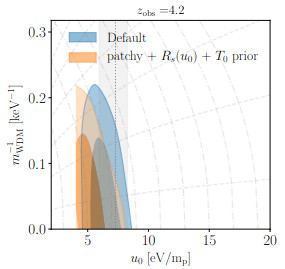
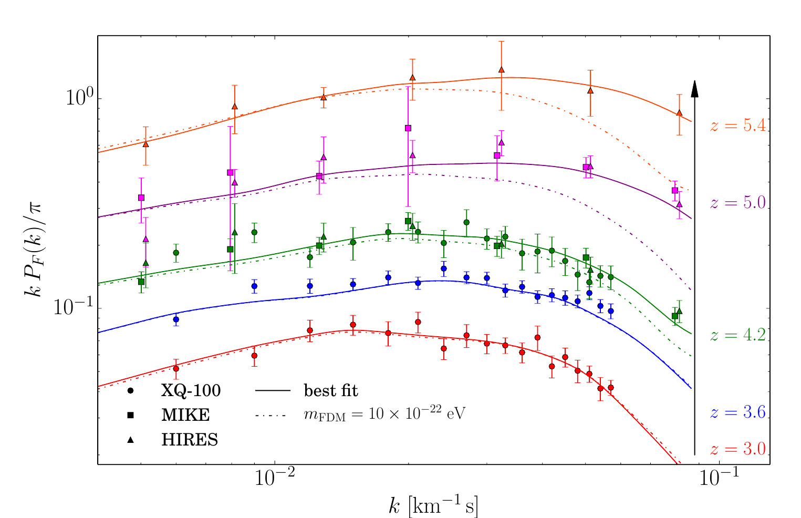
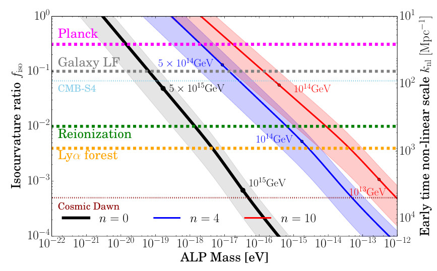
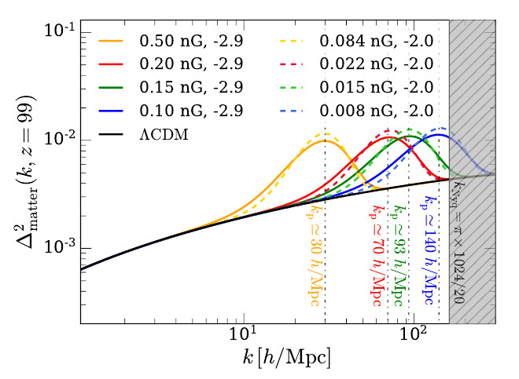

Warm Dark Matter (WDM) models suggest that dark matter particles possess a non-negligible velocity dispersion, which suppresses the growth of cosmic structure on small scales. By analyzing the Lyman-alpha forest from high-resolution quasar spectra (XQ-100 and HIRES/UVES; Iršič et al. 2017), we have established some of the most stringent constraints on the WDM particle mass to date. In Iršič et al. 2024, we utilized a massive suite of hydrodynamical simulations and a Gaussian process emulator to show that the thermal relic mass must be greater than 5.7 keV (at 95% CL). Our recent collaborative work (Garcia-Gallego, VI et al. 2025) further explores mixed dark matter scenarios, demonstrating that the data can accommodate up to 10% of dark matter in the form of a lighter 1 keV particle. This analysis represents a significant leap in precision, employing neural-network based emulators to bridge the gap between complex non-linear physics and Bayesian inference.

Source: Iršič et al. 2024Fuzzy Dark Matter (FDM) consists of extremely light bosons (mass ~1e-22 eV) where quantum pressure, arising from the de Broglie wavelength, prevents gravitational collapse on sub-galactic scales. In Iršič et al. 2015, we pioneered the use of the Intergalactic Medium (IGM) as a laboratory for FDM, using the Lyman-alpha flux power spectrum to detect the characteristic smoothing of density fluctuations. Our work ruled out the standard FDM model as the sole component of dark matter for masses below 2e-21 eV. Furthermore, in Kobayashi, VI et al. 2017, we extended this to mixed FDM models, setting a limit that allows at most 15% of the total dark matter to be in the form of 1e-22 eV FDM particles. This research highlights the power of the high-redshift forest in probing the wave-like nature of dark matter that is otherwise inaccessible to larger-scale probes like the CMB.

Source: Iršič et al. 2017While the standard cosmological model assumes purely adiabatic initial conditions, many early-universe theories—including those involving primordial black holes, axions, or multi-field inflation—predict isocurvature perturbations. These modes introduce a relative fluctuation between different species, such as dark matter and radiation, which can leave a distinct blue-tilted signature on small-scale structures. In Iršič et al. 2020, we provided a comprehensive framework for using the Lyman-alpha forest to constrain the amplitude of these perturbations, which are far more sensitive to small scales than the Cosmic Microwave Background. This work has recently culminated in a detailed analysis of new high-resolution QSO data (Garcia-Gallego, VI et al. 2026), which reports a tentative detection of white-noise isocurvature perturbations, offering a potential window into the physics of the very infant Universe.

Source: Iršič et al. 2020The origin of the large-scale magnetic fields observed in galaxies and clusters remains a fundamental mystery in cosmology. Primordial Magnetic Fields (PMFs) generated during inflation or phase transitions could provide the necessary seeds. In Pavičević, VI et al. 2025, we pioneered a method to use the Lyman-alpha forest to probe these fields by looking for their impact on the matter power spectrum and the thermal history of the IGM. Because PMFs contribute an additional source of pressure and heating, they alter the distribution of neutral hydrogen in the cosmic web. Our analysis provides unique, independent constraints on the strength and spectral index of these magnetic fields, offering a rare glimpse into the magnetogenesis of the early Universe. The analysis utilizes hydrodynamical simulations and Bayesian inference to show that the Lyman-alpha forest provides unique sensitivity to the magnetic spectral index and magnetic field strength, yielding constraints on magnetic field strength (at nG scales) that are highly competitive with those derived from the Cosmic Microwave Background.

Source: Pavičević, VI, et al. 2025